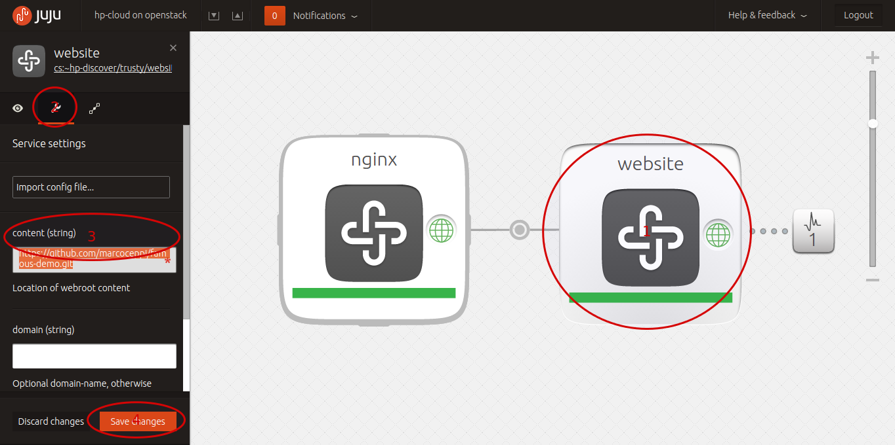

If you see this page then the website charm has been successfully deployed! You should change the content configuration option to point to a git repo, bazaar branch, or archive to have the contents updated.
In the Juju GUI: click on the website service on the canvas, select the wrench icon in the inspector, change the "content" option to a new repository, select the "Save Changes" button at the bottom.
Run the following command from the command-line, replacing https://github.com/juju/juju-academy.git with the repository of your choice.
juju set website content="https://github.com/juju/juju-academy.git"Thank you for using Juju.